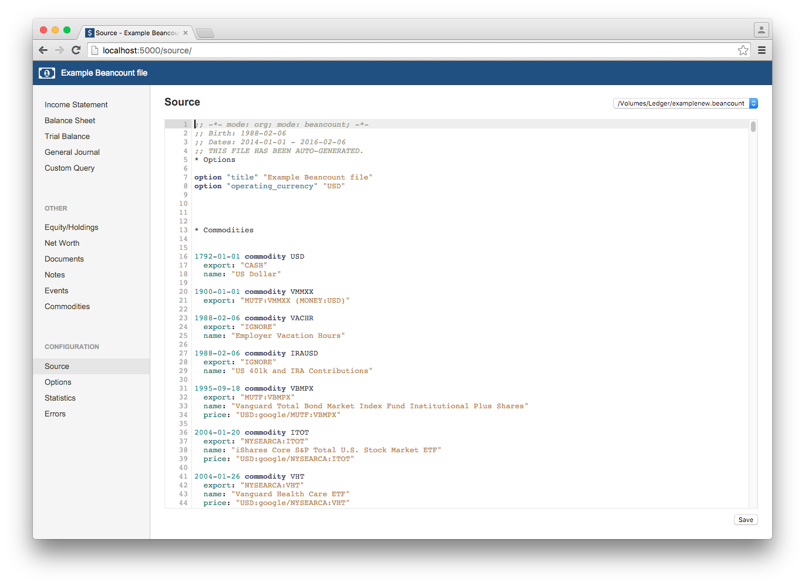
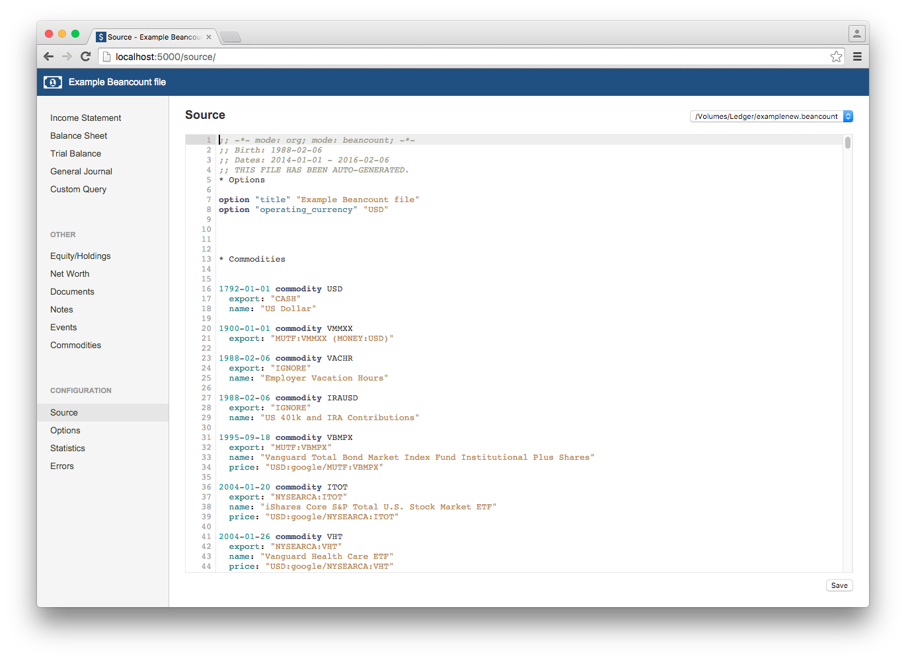

Managing my personal finances with beancount
Explaining my setup with beancount, fava, and pythonanywhere
This guide is considerably old. However, the concept will still work but likely the configuration is now different.
My version of getting started with beancount.
Introduction
The aim of this post is to walk you through my setup of how I manage my personal finances. I’ve read similar posts like these and found them useful to get ideas about what to do myself. Hopefully in turn, by presenting my setup it’ll give you some ideas too.
At the core of system is beancount. I’ll explain it a little more shortly, but essentially it is a tool that reads a plain text file of my financial activity and undertakes double-entry accounting in order to easily assess my finances in any way imaginable. My whole system actually involves several other tools and services in order to make it work how I want.
Using a tool like beancount means I am free to set everything up the way I want that works for me, and not the way someone thinks I want it. It also means my data is free from constraints.
What I wanted
- Data stored in plain text
- Add information quickly, and from anywhere
- A tool that could do everything - transactions, multiple currencies, stocks, investing, taxes, etc.
- A tool that could answer any question I had about my finances
- Fancy graphs on a website I could safely access anywhere
This is what I have.

The Background
ledger-cli like financial tools are the best.
Finding your system takes time and there can be many decisions to make. It took me a long time to realise the benefit of tracking my expenses and what my money was doing. When I did first start I used YNAB, You Need A Budget. I didn’t really need a budget. I wasn’t living pay cheque to pay cheque and had some savings, but I had no idea how much I should or could save a year or how much was I actually spending. What really was the cost of that holiday? My friend had started using YNAB, and I picked it up in a Steam sale for $15. It’s pretty decent, easy to use, import transactions, tracking, graphs. I liked it. The first problem I found was that it wasn’t setup for more than one currency. If you wanted more you had to make two separate budgets, and this meant that my expense categories ended up being a bit weird and after about 9 months of use I found I hadn’t set them up well. This ultimately meant I could get the information I wanted out of the tool. I could go back and adjust all the expenses into different accounts but I didn’t want to spend that time, and even then I’d still have to export everything into a spreadsheet to do further calculations. I’d also read some rumours that the next version was going to be a web only tool.
Now YNAB keeps it’s data in some particular way and whilst there’s an export all function from the tool, I was worried about longevity of it. This was reinforced when they released the new version that is web only and announced they’d stop support for the desktop application after one year. Probably it’ll work for many years forward, but one day something will be changed and it’ll cease to work. Also the new version was going to have a monthly subscription…
So I started my search for alternatives. Another feature I wanted was for it to be open source and natively run on linux, YNAB did via wine, but certainly wasn’t open source and that always bugged me. I try to encourage others to support and use open source and here I was doing the opposite. I had kept a duplicate ledger using GNUCash when I started with YNAB to see if I liked either of them, and I installed KMyMoney and even tried LibreOffice database program but they all had annoyances with multiple currencies and other things. Having something that could manage multiple currencies turned out to be my main decision criteria, and that’s when I finally sat down and read the ledger manual.
For about 3 months I started using YNAB and ledger side by side and I came to realise that ledger was the perfect tool for me. It effortlessly handles multiple currencies, I can query my data any which way I like and all my data is stored as plain text I can version control and easily read for the rest of my life. Actually, I started with beancount first for a week or two but then switched to ledger. After four months I ended up going back to beancount.
Beancount
If you’ve got here and don’t know what double-entry accounting or beancount or ledger are, I’m going to link you to this great site which explains it all.
I’m also going to save why I chose beancount over ledger for another post. The basics are:
- Beancount (like HLedger) reads the file then orders the transactions before processing; Ledger processes them in the order they appear. This means with beancount I can lay out my files anyway I want.
- Strict rules on writing transaction. This is the bit I touch, I’m bound to do it wrong.
- Being able to close accounts when they’re done, so they don’t appear anymore in reports etc.
- Cleaner (in my opinion) way of balance assertions
- I found the query syntax easier to understand
- and some other misc things.
The thing that made me switch? Seeing fava. This is an awesome project and the author has made several other contributions to the beancount world, one of which is the organised docs.
Beancount is by no means perfect, but it fits well in my system.
The System
Now to talk about the parts that make up my finances system. These are all the tools/apps that I use which I’ll explain.
Components:
- beancount: The accounting tool written and maintained by Martin Blais.
- fava A web interface to my data. Here’s a demo.
- spacemacs: Emacs and Vim ready to go.
- stackedit: In-browser editor. Many alternatives out there.
- Google Keep: Google’s note taking tool - good for quick notes on my phone on the go.
- Python price importer script: Of my own creation
- Dropbox: Cross platform file syncing tool
- pythonanywhere: Host, run, and code Python in the cloud.
- Gitlab: Git as a service, and unlimited free private repos.
The whole system is based around writing transactions that beancount can process and then analysing the data through fava.
The other tools aid me in doing this at home and away, although away generally means at work.
Entering Data
At home
Plain text means any text editor will do. However, some people have written helpers, namely for emacs, vim, and sublime. These generally auto complete account names and maybe a few other features like aligning the numbers and running bean-check to look for errors. The emacs beancount minor mode, written by Martin, has the most features - although not as many as ledger-mode, and if you already use emacs then it’s a no brainer. I’d tried emacs and vim in the past as I was curious as to what they were all about but as I’m not a developer and spend more time in Excel than anything else I didn’t have the time to learn them to get the most out of it.
When I was using ledger I spent time in setting up emacs but it was all a bit messy and I felt like I was spending a lot of time just trying to setup emacs and not really doing what I wanted to be doing (plotting more account graphs of course!), that’s when I found spacemacs. This is a great project and bakes a whole load of great emacs plugins into a single and managed distribution. I probably only use a tiny percentage of the features but for editing and adding transactions is very slick. Check it out if you haven’t. Sublime text would probably be my next best option for editing my beancount file. It’s a lot easier to get started with and has some autocompletion, but not that great.
Another reason why I stuck with emacs was to use org mode to structure my file. With Ledger I quickly found having one file with everything didn’t work too well. Especially when using xacts comand from emacs to add a transaction, so I split it into individual account files and added includes to my master ledger file. This was okay, but meant I had to move between a lot of files and as ledger doesn’t rearrange transactions some reports and queries gave weird outputs. I worked around this by telling ledger to print everything to a ledger.all file then running queries and reports on that, but that was a pain. Probably there’s a better way to do it but I never found it.
Anyway…I now have one file that’s broken into headers with org and I just open or close them to see transactions. e.g.
- Options
- Accounts
- Assets
- Bank 1
- Bank2
- Liabilities
- Credit Card 1
- Mortgage
- Loan 2
{kind=link}
I’m still learning all the keyboard commands but I can quickly add new transactions and make changes. I don’t use any importer tools (tools to take csv/ofx file from bank and convert into beancount input) as I tend to update once a week and there aren’t many transactions to add each time. Plus I like to look at each one and think about what we bought and if it was really worth it. This one looks promising, and Martin is working on a feature as part of beancount to do this.
These are the beancount minor-mode keys:
Key | Action | Description ——- | —- ——————- | ———– C-c ’ | Insert Account | Bring up selection to choose an account C-c C-g | Set transaction flag | Change ! to * C-c r | Refresh account list | Read the file to update accounts for using C-c ' C-c l | Runs bean-check | Opens a new window with the results C-c q | Query | Runs bean-query C-c x | Context | Shows other transaction related, bean-doctor context C-c k | Linked | Shows related transactions. Seems to be the same as context. C-c ; | Align to previous number | Aligns the costs to the transaction above C-c : | Align numbers | Should align all the numbers but doesn’t work for me. Could be spacemacs issue though.
Spacemacs has good completion from helm (I think!) so I don’t use insert account. Mostly use the transaction flag, running bean-check and aligning to previous numbers.
Once I’ve updated my transactions I commit the changes and push to my private repo on gitlab.
And Away
Sometimes I want to add some transactions when I’ve got some spare time at work, to save doing it at home in the evening, or if I’m away. All this really means is I need some way of editing my files from another computer. Depending on that other computer it can be really easy or really hard. My work is somewhere in between, I can generally access most websites but I can’t install anything and SSH is blocked. Other computers I’d use might be at someone’s house or in a public place and generally all I can guarantee is web access.
Again, even just web access there are a multitude of options and I keep looking out for better ones. However, as it currently stands I use dropbox and stackedit. Dropbox also acts as a nice way to sync the file between my computers at home, and it offers version control from the website for every time the file is saved - which I’ve used! Dropbox doesn’t have a built-in editor, or it certainly doesn’t work for .beancount files, so I need something else to edit it. That’s where I use stackedit. It can open files from Dropbox and Google Drive and save things to various places too. It’s meant as an authoring site for websites as it’s primarily a markdown editor. There are a bunch of these sites so whichever you like. Writebox for Chrome is also a nice app. There’s no autocompletion or fancy features but generally I’m copying and pasting old transactions and updating the date and amount 90% of the time. It’s not as efficient but if I’m making use of deadtime it’s efficient to me.
For quick notes from my phone, such as significant cash transactions or ones with store cards I rarely use (and often forget to check), I use google keep. I can add a note very quickly and it saves the time and date automatically and I just add the key info. I then look at this later and transcribe into beancount at home and archive the note. I use Google Keep for other random notes but any note app you use would work. The key was finding something with a good mobile interface for quick input.
2016-03-03 Update: I now use Gitlab to host my beancount files so I only update on the gitlab website if I’m not at home. Although I’ve found it better just to use Google Keep and update properly at home (I always forget to pull changes when at home!).
Beancount Setup
One of the hardest parts to getting to use beancount was navigating the docs to figure out how to use it. Not that the docs are bad in content, far from it. Martin writes huge quantities of high quality documents. These are hosted on google docs and makes it super easy for others to comment, make corrections and ask questions. No other project have I been able to so easily make updates or clarify points as easily. The only downside is you can’t search across all of the files to find some particular item. Generally I have to open up two or three docs that I think the answer might be in. When I first started using it I literally opened every doc in a separate tab and read through them all and constantly reference between them. Dominik Aumayr has made a nice sphinx generated site that pulls these links together although with the docstrings from the code in his site. You’ll still need to read a lot of them but it’s a good starting place, and I think him and Martin are working to pull the content of Google Docs into it.
So read all the docs!
These are good to get going:
I’m only going to show you the basics to get started, and point out some (probably not all) the differences to ledger.
Compared to ledger, beancount requires more “settings” in the file. You have to open all your accounts, declare commodities and generally be more descriptive. I like this as it reduces the chances of errors in either what I type in or what beancount thinks I want to happen.
Your file.beancount
So a basic file will start like:
;; -*- mode: org; mode: beancount; -*-
;; My legder file
* Options ; Beancount options
option "title" "My Finances"
option "operating_currency" "USD" ; The main currencies you use
option "operating_currency" "ABC"
option "operating_currency" "GBP"
** Accounts ; Open all the accounts you have
2016-02-28 open Assets:BC:Bank:Checking ABC ; You can specify commodities
2016-02-28 open Assets:US:Bank:Savings
2016-02-28 open Liabilities:UK:Bank:Loan
2016-02-28 open Liabilities:US:Bank:Credit
2016-02-28 open Equity:Opening-Balances
; When you start you have existing balances
; one way to manage this is to have an opening balance transaction.
; Alternatively you can use balance and pad.
** Opening Balances
2016-02-28 * "Opening Balances"
Assets:BC:Bank:Checking 1000.00 ABC
Assets:US:Bank:Savings 500.00 USD
Liabilities:UK:Bank:Loan -1000.00 GBP
Liabilities:US:Bank:Credit -1890.00 USD
Equity:Opening-Balances
* Commodities ; Declaring cash and stocks and imaginary commodities you use
* Banking ; Keep transactions under here for banks
- US
+ Bank 1 ; Org more sub headings for each country/bank
* Liabilities ; e.g. credit card transactions
; again sub divided by country/accounts
* Investments ; accounts related to investing
* Another other accounts or ways to divide up your system
* Prices
; Price data, or maybe an include to a price fileIt’s probably worthwhile looking at some of the example beancount files Martin has in his repo. Either example.beancount or files under the folders.
A basic transaction looks like this:
YYYY-MM-DD * "Payee" "Optional Description" #optional-tag
Account:Category:Sub-Category 1234.00 XYZ
Account:Category:Sub-Category -123.34 XYZ ;Optional Comment
Account:Category:Sub-CategorySome differences from ledger:
- Account can only be:
- Assets
- Liabilities
- Equity
- Income
- Expenses
- The
*has to be present, or it can be a!. Generally!means uncleared and*cleared. - The payee and description must be in “quotes”.
- Tags are #
- Prices are in this format:
2016-02-25 price GBP 1.40 USDYou have unlimited sub-categories, but a good design is: Account:Country:Institution:Account-type
e.g. Assets:US:Chase:Checking
For expenses I got a lot of good inspiration from the Mint list. However, I’d suggest you start small and grow as you use it.
Analysing data in your browser
This is my favourite part! You can do everything from the command line but I really enjoy the fava tool to explore my data:
 

Instructions to install it from the github repo: Install it from pip:
sudo pip3 install beancount-favaFrom command line run it with:
fava /Volumes/Ledger/example.beancountGo to: http://127.0.0.1:5000
It’s mostly self explanatory to navigate and use. Don’t forget to check out the demo.
Beancount includes the bean-query command which allows you to enter sql like code (bql - bean query language) to generate some reports. Fava has a view that allows you to enter your bql and see the result on the page and even export the data to CSV/Excel. Here’s a brief example:
Go to Custom Query and enter:
SELECT
month, account, sum(number) as Total, currency
FROM
year = 2016
WHERE
account ~ 'Expenses' OR
account ~ 'Income'
GROUP BY month, account, currency
ORDER BY month, currency, Account
FLATTEN{kind=link}
If you add them to your beancount file using query entry and then they appear as options on the web UI
2016-02-20 query "Monthly Totals - 2016" "
SELECT
month, account, sum(number) as Total, currency
FROM
year = 2016
WHERE
account ~ 'Expenses' OR
account ~ 'Income'
GROUP BY month, account, currency
ORDER BY month, currency, Account
FLATTEN
"A bean-query cookbook site has started where you can submit your queries and see others, check it out for more ideas. The full bean-query documentation is here.
Beancount data analysis extras
The only other analysis I do is taking the monthly summary data and putting it into a Google docs spreadsheet. This is so I can do some forecasting on how much I think I’m going to spend this year and then how much I could save. When I first started tracking expenses I became a bit obsessed and didn’t buy anything, I was trying to maximise how much I saved. However, this soon got tiring and a little depressing. Yes, saving for the future/rainy days is very important but I should still be able to enjoy myself now. I figured it would be better if I had a target savings amount, and as long as I met that, I could spend the rest on “luxuries”. In fact this probably helps me reach my goals but not making saving a chore. So the spreadsheet estimates how much I could save and then I set my target based on that. When I want to buy something I don’t need, like a new camera, I can see what my trend is and know either if I can get it or how long I should wait before I can buy it.
This is only going to get easier once PIVOT BY is released for bean-query.
Within beancount itself there is the bean-report function, a lot (perhaps all) of these reports are covered in fava but it’s a quick tool to spit out something if you need it in a hurry from the command line.
They’re generated with bean-report FILENAME.beancount {report name}. Running –help against bean-report will show a list of the reports and what they do. This can also print out your transactions in hledger/ledger format in case you want to use one of those tools, although special features of (h)ledger may not be covered.
Free fava hosting
Wouldn’t it be great to access fava, this incredible tool, from anywhere? Given the demo is hosted on pythonanywhere, I figured I should be able to host my own beancount file there too. Plus I knew from using pythonanywhere before there’s a really easy password protection option you can setup to keep your data hidden. So here’s what to do:
Setup
Create an account at pythonanywhere.
{kind=link}
Add a new web app:
- Manual configuration
- Python 3.4
Once it’s made, edit WSGI under Code and replace everything with this. Adjust the location of your file and config.
from fava.application import app as application
from fava.application import load_file
application.config['BEANCOUNT_FILE'] = '/home/USER/money.beancount'
load_file()Save it and go back to the webapp page. Add a user and password at the bottom, I’d recommend NOT your pythonanywhere user/password and something long and unique, preferably generated and saved in a password manager like KeePassX. Now we need to install fava, to do this we’re going to use a script that’ll also be used for updating fava automatically.
Fava Installation
Again, inspired by the fava demo site lets set it up so new updates are automatically installed.
From the dashboard, go to consoles and start a Bash console.
Let’s pull a copy of the code, this isn’t necessary but might be useful in the future.
git clone https://github.com/aumayr/fava.gitIf you want to change the default settings, copy the config file to your home directory and update the wsgi above. The web server will then reference this. I’ve not found the need to change anything, but perhaps changing the theme might be one you do.
cp ~/fava/fava/default-settings.conf ~You could always just pull the file directly from github if you don’t want to clone the whole project:
wget https://raw.githubusercontent.com/aumayr/fava/master/fava/default-settings.confIf you use a settings file make sure you update the wsgi file above to reference it.
Now we need to make the update script:
nano update.shAdd this code to it, ensuring you change the USER name.
#!/bin/bash
# Add user bin
export PATH=$PATH:/home/USER/.local/bin
# Upgrade fava
pip3 install --user --upgrade beancount-fava
# Reload web page
touch /var/www/USER_pythonanywhere_com_wsgi.pyMake it executable and run it.
chmod +x update.sh
./update.sh{kind=link}
Your site should now be working, but we don’t have a beancount file there. To test it out you could just manually upload your file from the Files tab, along with any include files.
Go to https://USER.pythonanywhere.com, enter your username and password and there’s your beancount data on the web! If it doesn’t work try reloading from the Web config page. If it still doesn’t work, check all your files and variable names.
pythonanywhere does support SSL (https) but doesn’t auto re-write so make sure you enter it into your browser.
Automagicness
To get fava to update automatically we simple go to the Schedule tab in the pythonanywhere dashboard and add a time and link to the update script, /home/USER/update.sh. If you find you run out of CPU usage, disable this and just do it manually every so often. I’d suggest setting the time to 23:55, so that way it runs and then your CPU limit gets reset at midnight.
{kind=link}
Now to automatically get your beancount file. I’m going to assume you don’t want to pay for pythonanywhere - as great as it is! I bring this up as it limits what methods you can push files to your account. SSH/rsync in or out of your account only work for paid accounts. If you do pay then you can setup a cron task on your home computer to push the file to your pythonanywhere account.
Rsync (paid only)
I find having ssh config setup is useful to make rsync and ssh easier
cat ~/.ssh/config
Host pyanyw
HostName ssh.pythonanywhere.com
port 12345
User your_pythonanywhere_user
IdentityFile ~/.ssh/id_rsa_SERVER1Then add to your crontab with whatever frequency you’d like e.g. once a day at 4 am:
0 4 * * * rsync -avzhP -e ssh /file/path/on/home/beancount.file "pyanyw:/home/USER/beancount.file"Auto sync
Two methods I’ve thought for this:
Dropbox. Turns out this won’t work on pythonanywhere, looks like they tried but couldn’t get it working. I use it as part of the rest of the whole finance system so would’ve been nice to use it here. I left dropbox as an option in to point this out in case you were wondering.
Git / version control server This is a great way as you have version control and can add a pull command in the update script. If you want to make changes on the server and push back, you’d have to log into pythonanywhere and start a console to make a commit though. Gitlab does free private repos, and since writing this post originally I’ve now setup a private gitlab repo.
There’s two things you need to setup to use your gitlab repo automatically:
SSH keys
Actually this isn’t needed if you only ever intend on pulling from gitlab. This is just so you can git push without needing your password.
This allows passwordless access to your repo, essential if you want to automate it. It’s best to make a new key, something like id_gitlab.
Open a bash console on pytonanywhere:
ssh-keygen -t rsa -C "$your_email"Then add this key to the ‘My SSH Keys’ section under the ‘SSH’ tab in your user profile. Output it to the terminal with cat:
cat ~/.ssh/id_gitlab.pubMake sure it’s the .pub one!
Now we need to make pythonanywhere know of this key in a ssh config file.
cat ~/.ssh/config
Host gitlab.com
RSAAuthentication yes
IdentityFile ~/.ssh/id_gitlab
User mygitlabusernameUpdate our update.sh script
Change the script to:
#!/bin/bash
# Update beancount file
git -C money/ pull
# Add user bin
export PATH=$PATH:/home/alexjj/.local/bin
# Update fava
pip3 install --user --upgrade beancount-fava
# Reload web page
touch /var/www/alexjj_pythonanywhere_com_wsgi.pyNow clone your gitlab repo, and update the update.sh and wsgi scripts to match your location. Restart the web server and now everything should be automatically updated and pulled daily!
Just to note that if you edit the beancount file in fava and save it, the git pull won’t work as you’ll have uncommitted changed. So either commit the changes, or revert them. I’m considering setting up something to make it easier to commit changes, but I find I rarely want to add anything on fava as it involves too much typing compared to editing in spacemacs.
Finishing touches
Now you have the awesome fava tool to query, graph and analyse your data accessible from anywhere. If you have your own domain you can add a forwarding rule and point it at https://USER.pythonanywhere.com so you can go to myawesomemoneysite.com and there’s your data.
I’d suggest subscribing to the mailing lists, or at least favouriting them on google groups, join the irc channels and trying it all yourself.
Let me know if you have set this up and any improvements you’ve made!